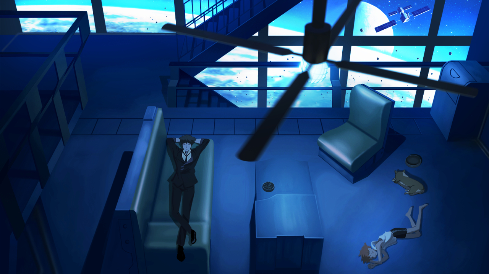

TOP.公告
网盘密码通用: 2333
投稿邮箱: 3124076548@qq.com
简单介绍下作品即可

3.《纯真之夏》《なちゅらるばけーしょん》
主题: 夏日 海岛 拔作 || 开发: hibiki works || 发行日期: 2017年12月22日
Scens: None BGM: Hone Game: Download
季节已是夏季。
走下冷气充足的大巴，迎面而来的烈日与热浪使我不禁眯起了眼睛。
慢慢睁开眼睛，面前是一望无际的蓝色。
太阳照射在水面上闪闪发光，空中的云朵，将天空点缀出点点白色，拂过的清风，带来的些许海的气息。
“这就是，之后要生活的小镇啊”
父母赴海外工作的缘故，让我离开了大都市，来到了父亲的老家流水镇，之后将会和爷爷一起生活。
镇上热情的人们欢迎着我的到来，其中有两个女孩子。
这个夏天，在这个小镇，度过一个美好的暑假怎么样？
走下冷气充足的大巴，迎面而来的烈日与热浪使我不禁眯起了眼睛。
慢慢睁开眼睛，面前是一望无际的蓝色。
太阳照射在水面上闪闪发光，空中的云朵，将天空点缀出点点白色，拂过的清风，带来的些许海的气息。
“这就是，之后要生活的小镇啊”
父母赴海外工作的缘故，让我离开了大都市，来到了父亲的老家流水镇，之后将会和爷爷一起生活。
镇上热情的人们欢迎着我的到来，其中有两个女孩子。
这个夏天，在这个小镇，度过一个美好的暑假怎么样？

2.《水莲与紫苑》《水蓮と紫苑》
主题: 夏日 海岛 拔作 || 开发: hibiki works || 发行日期: 2020年11月27日
Scens: None BGM: Bilibili Game: Download
水无濑岛——。
因为是离岛，交通不便，所以不能说是观光地
是主人公小时候经常来玩的岛。
父母担心孩子升入医学部，每天埋头于学习，却失去了从容的生活
利用夏季休假恢复精神的同时，还和表姐一起去打招呼
主人公再次来到了岛上。
脑海中浮现的是小时候度过的时间和
是像真正的家人一样相处的表姐。
水莲从小就很漂亮，对自己也很温柔，像真正的姐姐一样对待。
紫苑就像是一个老婆婆，在自己身后东奔西走的妹妹。
觉得两个人是怎样成长的主人公
到达了听姐姐说话的姐妹家，和长大后的两人再会。
像是显示了满满的包容力
水莲成为了一位体态优美的女性。
虽然成长为美丽的少女，但却带着一副不高兴的表情
紫苑只提供最低限度的对话。
不变的姐姐和奇怪的妹妹。
虽然感到困惑，但好像在等着主人公一样
在水莲的推荐下，暂时在姐妹生活的家里度过。
一边沐浴着夏日的阳光，一边和在这个岛上度过的姐妹一起度过的时间
会变成什么样的东西呢——。
因为是离岛，交通不便，所以不能说是观光地
是主人公小时候经常来玩的岛。
父母担心孩子升入医学部，每天埋头于学习，却失去了从容的生活
利用夏季休假恢复精神的同时，还和表姐一起去打招呼
主人公再次来到了岛上。
脑海中浮现的是小时候度过的时间和
是像真正的家人一样相处的表姐。
水莲从小就很漂亮，对自己也很温柔，像真正的姐姐一样对待。
紫苑就像是一个老婆婆，在自己身后东奔西走的妹妹。
觉得两个人是怎样成长的主人公
到达了听姐姐说话的姐妹家，和长大后的两人再会。
像是显示了满满的包容力
水莲成为了一位体态优美的女性。
虽然成长为美丽的少女，但却带着一副不高兴的表情
紫苑只提供最低限度的对话。
不变的姐姐和奇怪的妹妹。
虽然感到困惑，但好像在等着主人公一样
在水莲的推荐下，暂时在姐妹生活的家里度过。
一边沐浴着夏日的阳光，一边和在这个岛上度过的姐妹一起度过的时间
会变成什么样的东西呢——。
1.《纸上的魔法使》《紙の上の魔法使い》
主题: 魔法 恋爱 || 开发: ウグイスカグラ || 发行日期: 2014年12月19日
Scens: Bilibili BGM: Bilibili Game: Download
在某个岛上有一座规模略小的图书馆。这座图书馆是专门为了某个少女而建造的，游行寺家的私人图书馆。
这座图书馆里有很多的罕见的书物，如果是书虫的话，那就绝对不会存在比这里还要爱不释手的地方。
而，在这般首屈一指的私人图书馆里，住着几位出众且愉快的住人。
热爱图书的尼特少女·游行寺夜子。毒舌，冷淡的妹妹·月社妃。
借住于图书馆的天然少女·伏见理央。还有一位被这背后的秘密而吸引过来的侦探少女·日向かなた。
他们就宛如被什么而引导着一样，互相邂逅——随后又以“喜爱书”这一点为契机，开始了属于他们的青春。
一开始的图书馆虽然寂寞单调，可自主人公一行人住进来之后这座图书馆就变得渐渐热闹了起来。在不知不觉中——他们之间的关系变的亲密起来，达到了所谓青o梅竹马的程度。
时光飞逝，2年后。因家庭原因，主人公离开了这座岛屿。
而这次，主人公久违的回到了那座图书馆。
与2年前相同这里还和以前一样，无论是图书馆还是亲爱的青梅竹马们都没有发生太大的变化。
可是，那在2年前未曾得知的“图书馆的秘密”这次却等待着主人公去揭晓它。
「——出现在书中之事，会在现世中再现。无论那是何等荒谬之事」
如果是酸酸甜甜的恋爱系小说的话，那就会发生宛如飘渺的爱情罗曼史。又假如那是惊讶重重的幻想系小说的话，到了明天就会有吸血鬼出现在你的面前。
而碰到了略惊悚的恐怖系物语的话，你的身后就会有幽灵在向你招手。 「这就是所谓的“魔法的书物”」
这是一个被小清新的青春与苦闷焦躁的感情所动摇的，某个小小图书馆的物语……
把游行寺夜子的逞强，把月社妃的可爱，把伏见理央的坚强，把日向かなた的耀眼感……
准备好——来一场你与“书”缘由的恋爱吧
这座图书馆里有很多的罕见的书物，如果是书虫的话，那就绝对不会存在比这里还要爱不释手的地方。
而，在这般首屈一指的私人图书馆里，住着几位出众且愉快的住人。
热爱图书的尼特少女·游行寺夜子。毒舌，冷淡的妹妹·月社妃。
借住于图书馆的天然少女·伏见理央。还有一位被这背后的秘密而吸引过来的侦探少女·日向かなた。
他们就宛如被什么而引导着一样，互相邂逅——随后又以“喜爱书”这一点为契机，开始了属于他们的青春。
一开始的图书馆虽然寂寞单调，可自主人公一行人住进来之后这座图书馆就变得渐渐热闹了起来。在不知不觉中——他们之间的关系变的亲密起来，达到了所谓青o梅竹马的程度。
时光飞逝，2年后。因家庭原因，主人公离开了这座岛屿。
而这次，主人公久违的回到了那座图书馆。
与2年前相同这里还和以前一样，无论是图书馆还是亲爱的青梅竹马们都没有发生太大的变化。
可是，那在2年前未曾得知的“图书馆的秘密”这次却等待着主人公去揭晓它。
「——出现在书中之事，会在现世中再现。无论那是何等荒谬之事」
如果是酸酸甜甜的恋爱系小说的话，那就会发生宛如飘渺的爱情罗曼史。又假如那是惊讶重重的幻想系小说的话，到了明天就会有吸血鬼出现在你的面前。
而碰到了略惊悚的恐怖系物语的话，你的身后就会有幽灵在向你招手。 「这就是所谓的“魔法的书物”」
这是一个被小清新的青春与苦闷焦躁的感情所动摇的，某个小小图书馆的物语……
把游行寺夜子的逞强，把月社妃的可爱，把伏见理央的坚强，把日向かなた的耀眼感……
准备好——来一场你与“书”缘由的恋爱吧